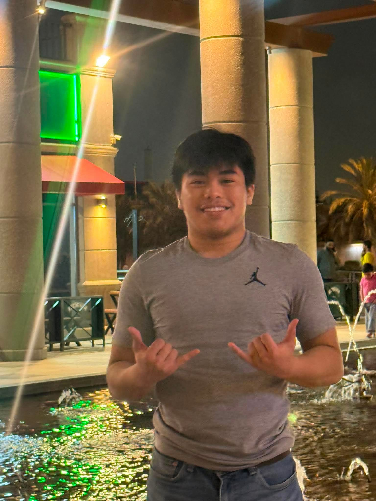
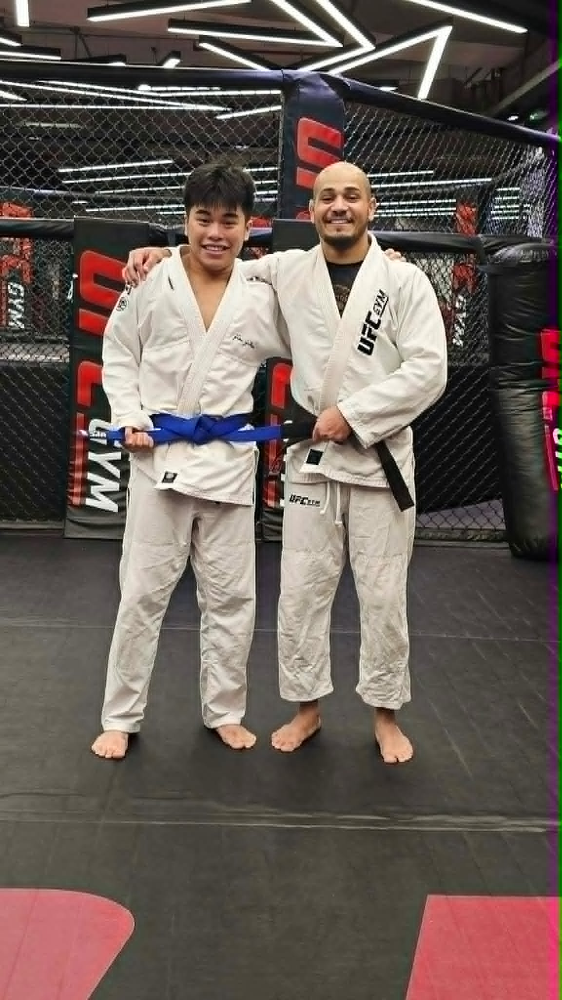

About Me
I was born in Saudi Arabia in April of 2007. Ever since I was young, I
have always had a passion for learning and improving myself through
continuous self-reflection and acquiring new knowledge. My mission is to
help improve people's lives and society through my skills in
Cybersecurity.


When I want to take a productive break from learning and practicing in
my field, I like to exercise my mind and body by practicing Brazilian
Jiu-Jitsu. This martial art is a good way to take a mental break from
the demands of Cybersecurity in a productive and healthy way;
continuously developing my problem-solving and decision-making skills.